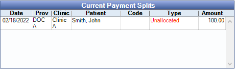

Conversions: Family Balancer
When transaction history is converted, in most cases the conversion can determine which family members had production (e.g., completed procedures and adjustments). However, based on the raw data from the other practice management software the conversion is not able to determine which patient payments in the family were meant to pay off those charges. To correct this, the Family Balancer Tool is run during the final conversion. The tool allocates all patient payments within the family to the family's charges.
There are two allocation methods the Family Balancer Tool offers, see below. Either method may run on a single patient/family or all patients. A conversion department representative will discuss which method is best for the final conversion.
Family Balancer Options
The Family Balancer Tool can either transfer the income to charges via an income transfer or recreate patient payment splits on the original payment, allocating them to charges without an income transfer.
Income Transfer Method
This method keeps all existing unallocated patient payments converted from the old practice management software but create new $0 payments (income transfers) that subtracts the income away from the original payment then applies the income to family member production. Income transfers show as blank payment items with a Txfr code on the patient account. If income is transferred between family members, clinics, and providers, a Txfr shows for the total negative amount transferred from each patient/clinic/provider combination, and for the total positive amount transferred to each combination.
Example of an income transfer in the Account Module:
There are two different ways the income transfer method can allocate payments to production; rigorous or FIFO. Both income transfer methods also allocate claim payments to procedures associated to the claim (if claims were converted) and corrects some claims that were converted without procedures. See Income Transfer Manager, Transfer Logic - Claim Transfers and Claims with No Procedures.
- Rigorous Income Transfer: Transfers payments to the oldest charges with at least one matching provider, patient, and clinic combination as the payment. For a detailed explanation on how the rigorous income transfer allocates see Income Transfer Manager, Transfer Logic.
- PRO: Attempts to keep the payment associated to its original provider and clinic. Useful for offices paying providers on collections. Also, any excess payments (total family balance is a credit as a result of an overpayment) are moved to Unearned Income.
- CON: Future payments may be allocated to old charges that were paid off pre-conversion. This typically happens when the payment was originally entered for the wrong provider or clinic than the production item was billed under so the transfer allocated the payment to a newer procedure that had a matching provider/clinic combination.
- FIFO Income Transfers: Transfers payments to the oldest charges within the family using first-in, first-out (FIFO) logic. It does not matter if the charge has a matching provider, patient, or clinic as the payment. For a detailed explanation on how the FIFO income transfer allocates see Income Transfer Manager, FIFO Transfer Logic.
- PRO: Future payments may more accurately reflect unpaid charges pre-conversion.
- CON: May cause a family member with a paid-off balance to owe money after the transfer. Not recommended for offices paying providers on collections as a provider that may have been paid pre-conversion could be paid again and for work not performed post-conversion. Any excess payments are left unallocated.
Recreate Payment Splits
This method deletes unallocated patient payment splits on the original conversion payment and creates brand new splits allocated to production items using FIFO logic. Negative payments are offset with positive payments or allocated to negative adjustments (e.g., discount). Any excess payments are split to Unearned Income. Original payment dates and amounts are kept.
- PRO: Payments are allocated directly to production and less income transfers are needed.
- CON: Unlike the income transfer methods, negative adjustments are not allocated to procedures and may still need to be allocated via an income transfer. Payments may also be left with unallocated pay splits if there is a matching negative payment (e.g., patient refund). Families could be skipped all together if a negative payment exists with no corresponding negative production item or positive payment to offset it. Does not allocate converted claim payments.
Example of a converted payment with an unallocated payment split:
Example of a converted payment after the tool recreates the payment split:

After a Conversion
Run the Net Unearned Income Report to review accounts with unearned income.
To receive a patient payment after a conversion, in the Account Module, highlight the procedures associated to the payment and click Payment. If there is a prompt stating the procedure is overpaid, please contact support.
To receive an insurance payment after a conversion, in the Account Module, create the Claims that were sent in the previous software, then Finalize the Insurance Payment. Also see Conversions: Outstanding Claims.
Zeroing A/R
Patient Accounts: In the converted database, the account history will be visible, but all accounts will have a "Conv - Adjustment" adjustment that sets patient balances to zero. Any payments or adjustments towards any balance prior to the conversion should be entered into your prior software. If you plan on managing outstanding collections through Open Dental, any debit or credit balances from the prior software should be manually entered into the Open Dental final conversion database by your office. You will need to maintain access to the previous software as long as there is outstanding A/R, unless you opt to manually move the balances to Open Dental. Open Dental recommends keeping a copy of the old software for long-term reference.
Claims: Any procedures completed after the conversion will be billed out of Open Dental. If patient balances still exist in the prior software, billing may need to be run in both software applications.